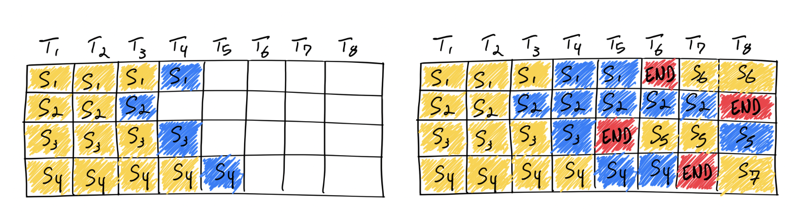
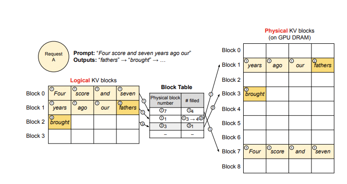

推理及部署
训练后的模型会用于推理或者部署。推理即使用模型用输入获得输出的过程，部署是将模型发布到恒定运行的环境中推理的过程。一般来说，LLM的推理可以直接使用PyTorch代码、使用VLLM /XInference /FastChat 等框架，也可以使用llama.cpp /chatglm.cpp /qwen.cpp 等c++推理框架。
一些推理方法
Greedy Search 贪婪搜索方式 。按照前面的讲解，模型会按照词表尺寸生成概率。贪婪方式会不断选择生成概率最大的token。该方法由于无脑选择了最大概率，因此模型会倾向于生成重复的文字，一般实际应用中很少使用
Beam Search 和贪婪方式的区别在于，beam search会选择概率最大的k个。在生成下一个token时，每个前序token都会生成k个，这样整体序列就有k^2个，从这些序列中选择组合概率最大的k个，并递归地执行下去。k在beam search算法中被称为beam_size
Sample 随机采样方式。按照词表每个token的概率采样一个token出来。这个方式多样性更强，是目前主流的生成方式。
重要推理超参数
\(\(q_i=\frac{\exp(z_i/T)}{\sum_{j}\exp(z_j/T)}\) \)
从公式可以看出，如果T取值为0，则效果类似argmax，此时推理几乎没有随机性；取值为正无穷时接近于取平均。一般temperature取值介于[0, 1]之间。取值越高输出效果越随机。
如果该问答只存在确定性答案，则T值设置为0。反之设置为大于0。
KVCache
上面我们讲过，自回归模型的推理是将新的token不断填入序列生成下一个token的过程。那么，前面token已经生成的中间计算结果是可以直接利用的。具体以Attention结构来说：
推理时的Q是单token tensor，但K和V都是包含了所有历史token tensor的长序列，因此KV是可以使用前序计算的中间结果的，这部分的缓存就是KVCache，其显存占用非常巨大。
VLLM
VLLM支持绝大多数LLM模型的推理加速。它使用如下的方案大幅提升推理速度：
Continuous batching
在实际推理过程中，一个批次多个句子的输入的token长度可能相差很大，最后生成的模型输出token长度相差也很大。在python朴素推理中，最短的序列会等待最长序列生成完成后一并返回，这意味着本来可以处理更多token的GPU算力在对齐过程中产生了浪费。continous batching的方式就是在每个句子序列输出结束后马上填充下一个句子的token，做到高效利用算力。

PagedAttention
推理时的显存占用中，KVCache的碎片化和重复记录浪费了50%以上的显存。VLLM将现有输入token进行物理分块，使每块显存内部包含了固定长度的tokens。在进行Attention操作时，VLLM会从物理块中取出KVCache并计算。因此模型看到的逻辑块是连续的，但是物理块的地址可能并不连续。这和虚拟内存的思想非常相似。另外对于同一个句子生成多个回答的情况，VLLM会将不同的逻辑块映射为一个物理块，起到节省显存提高吞吐的作用。

值得注意的是，VLLM会默认将显卡的全部显存预先申请以提高缓存大小和推理速度，用户可以通过参数gpu_memory_utilization控制缓存大小。
首先安装VLLM：
os
[ 'VLLM_USE_MODELSCOPE' ] = 'True'
vllm import LLM, SamplingParams
prompts = [
"Hello, my name is" ,
"The president of the United States is" ,
"The capital of France is" ,
"The future of AI is" ,
]
sampling_params = SamplingParams( temperature = 0 .8, top_p = 0 .95)
llm = LLM( model = "qwen/Qwen-1_8B" , trust_remote_code = True)
outputs = llm.generate( prompts, sampling_params)
# Print the outputs.
for output in outputs:
prompt = output.prompt
generated_text = output.outputs[ 0 ] .text
print( f"Prompt: {prompt!r}, Generated text: {generated_text!r}" )
注意，截止到本文档编写完成，VLLM对Chat模型的推理支持（模板和结束符）存在问题，在实际进行部署时请考虑使用SWIFT或者FastChat。
LLM的generate方法支持直接输入拼接好的tokens(prompt_token_ids参数，此时不要传入prompts参数)，所以外部可以按照自己的模板进行拼接后传入VLLM，SWIFT就是使用了这种方法
在量化章节中我们讲解了AWQ量化 ，VLLM直接支持传入量化后的模型进行推理：
from vllm import LLM , SamplingParams
import os
import torch
os . environ [ 'VLLM_USE_MODELSCOPE' ] = 'True'
# Sample prompts.
prompts = [
"Hello, my name is" ,
"The president of the United States is" ,
"The capital of France is" ,
"The future of AI is" ,
]
# Create a sampling params object.
sampling_params = SamplingParams ( temperature = 0.8 , top_p = 0.95 )
# Create an LLM.
llm = LLM ( model = "ticoAg/Qwen-1_8B-Chat-Int4-awq" , quantization = "AWQ" , dtype = torch . float16 , trust_remote_code = True )
# Generate texts from the prompts. The output is a list of RequestOutput objects
# that contain the prompt, generated text, and other information.
outputs = llm . generate ( prompts , sampling_params )
# Print the outputs.
for output in outputs :
prompt = output . prompt
generated_text = output . outputs [ 0 ] . text
print ( f "Prompt: { prompt !r} , Generated text: { generated_text !r} " )
VLLM官方文档可以查看这里 。
SWIFT
在SWIFT中，我们支持了VLLM的推理加速手段。
install ms-swift[ llm] openai
只需要运行下面的命令就可以使用VLLM加速推理：
infer --model_id_or_path qwen/Qwen-1_8B-Chat --max_new_tokens 128 --temperature 0 .3 --top_p 0 .7 --repetition_penalty 1 .05 --do_sample true
也支持在部署中使用VLLM：
deploy --model_id_or_path qwen/Qwen-1_8B-Chat --max_new_tokens 128 --temperature 0 .3 --top_p 0 .7 --repetition_penalty 1 .05 --do_sample true
调用：
from openai import OpenAI
client = OpenAI (
api_key = 'EMPTY' ,
base_url = 'http://localhost:8000/v1' ,
)
model_type = client . models . list () . data [ 0 ] . id
print ( f 'model_type: { model_type } ' )
query = '浙江的省会在哪里?'
messages = [{
'role' : 'user' ,
'content' : query
}]
resp = client . chat . completions . create (
model = model_type ,
messages = messages ,
seed = 42 )
response = resp . choices [ 0 ] . message . content
print ( f 'query: { query } ' )
print ( f 'response: { response } ' )
# 流式
messages . append ({ 'role' : 'assistant' , 'content' : response })
query = '这有什么好吃的?'
messages . append ({ 'role' : 'user' , 'content' : query })
stream_resp = client . chat . completions . create (
model = model_type ,
messages = messages ,
stream = True ,
seed = 42 )
print ( f 'query: { query } ' )
print ( 'response: ' , end = '' )
for chunk in stream_resp :
print ( chunk . choices [ 0 ] . delta . content , end = '' , flush = True )
print ()
"""Out[0]
model_type: qwen-7b-chat
query: 浙江的省会在哪里?
response: 浙江省的省会是杭州市。
query: 这有什么好吃的?
response: 杭州有许多美食，例如西湖醋鱼、东坡肉、龙井虾仁、叫化童子鸡等。此外，杭州还有许多特色小吃，如西湖藕粉、杭州小笼包、杭州油条等。
"""
llama.cpp
llama.cpp是使用c++语言编写的对llama系列模型进行高效推理或量化推理的开源库。该库使用了ggml底层计算库进行推理。在使用之前需要额外将python的weights转为ggml格式或gguf格式方可使用。和llama.cpp类似，还有兼容ChatGLM模型的chatglm.cpp和兼容qwen模型的qwen.cpp和mistral的mistral.cpp。
安装依赖：
git clone -- recursive https : // github . com / QwenLM / qwen . cpp && cd qwen . cpp
cmake - B build
cmake -- build build - j -- config Release
下载模型：
from modelscope import snapshot_download
print ( snapshot_download ( 'qwen/Qwen-1_8B-Chat' ))
# /mnt/workspace/.cache/modelscope/qwen/Qwen-1_8B-Chat
将原始模型转换为ggml支持的格式：
qwen_cpp/convert.py -i /mnt/workspace/.cache/modelscope/qwen/Qwen-1_8B-Chat -t q4_0 -o qwen1_8b-ggml.bin
-m qwen1_8b-ggml.bin --tiktoken /mnt/workspace/.cache/modelscope/qwen/Qwen-1_8B-Chat/qwen.tiktoken -p 你好
# 你好！有什么我可以帮助你的吗？
量化章节中我们介绍，GGML库适合于CPU运行，因此推荐用户在CPU环境中或边缘计算中考虑cpp库进行推理。
FastChat
FastChat是一个开源推理库，侧重于模型的分布式部署实现，并提供了OpenAI样式的RESTFul API。
install "fschat[model_worker,webui]"
-m fastchat.serve.controller
在新的terminal中启动：
FASTCHAT_USE_MODELSCOPE = true python3 -m fastchat.serve.model_worker --model-path qwen/Qwen-1_8B-Chat --revision v1.0.0
之后在新的terminal中可以运行界面进行推理:
-m fastchat.serve.gradio_web_server